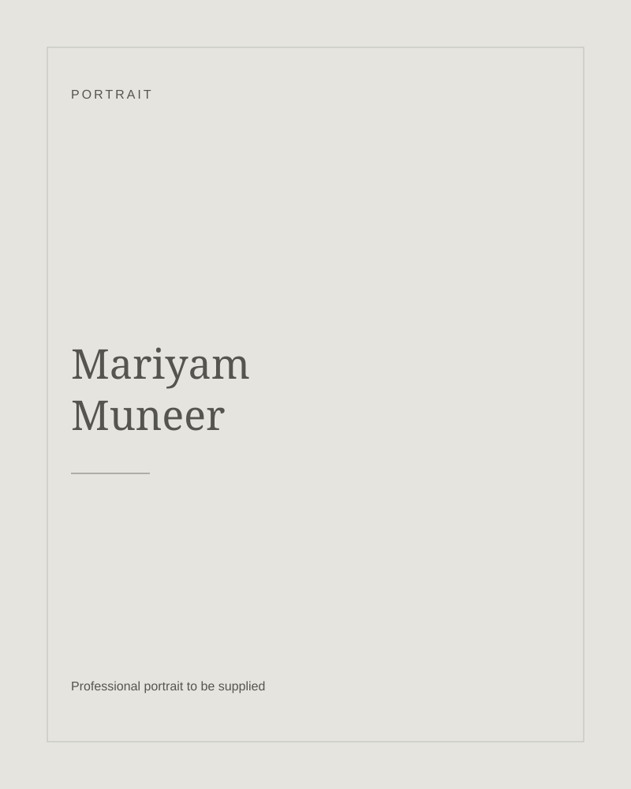

01
Internship · Website & LMS
MSN Academy
Helping students move from finding a course to continuing their learning.
UX audit · Web & mobile UI · Developer handoff
Mariyam Muneer / Lahore, Pakistan
Open to opportunities
Hi, I’m Mariyam, a UI/UX and product designer.
I design
websites and apps that are thoughtful,
clear, and easy to use.
Real projects. Considered decisions.
01
Internship · Website & LMS
Helping students move from finding a course to continuing their learning.
UX audit · Web & mobile UI · Developer handoff


02
Independent concept · Mobile marketplace
Exploring how comparison and clearer seller information can support second-hand buying.
Research · Usability testing · Iteration


03
Freelance · Guided workout app
A quieter way for one client to follow strength and recovery sessions.
Client brief · Interaction design · AI-assisted build
Beyond the screens.

That’s what drew me to design: listening, untangling a problem, and finding a clearer way forward.
I’m a junior designer with experience through an internship, a freelance client project and independent work. I’m completing a BS in Biotechnology and building my design foundations through Google’s UI/UX design course on Coursera. Science and teaching have shaped how I ask questions and explain ideas.
I enjoy the balance of research and creativity: making something useful, then paying attention to the details that make it feel considered.
Research, user flows, interface design
and interactive
prototypes.
Figma and Notion.
Vibe coding with Codex and Claude.